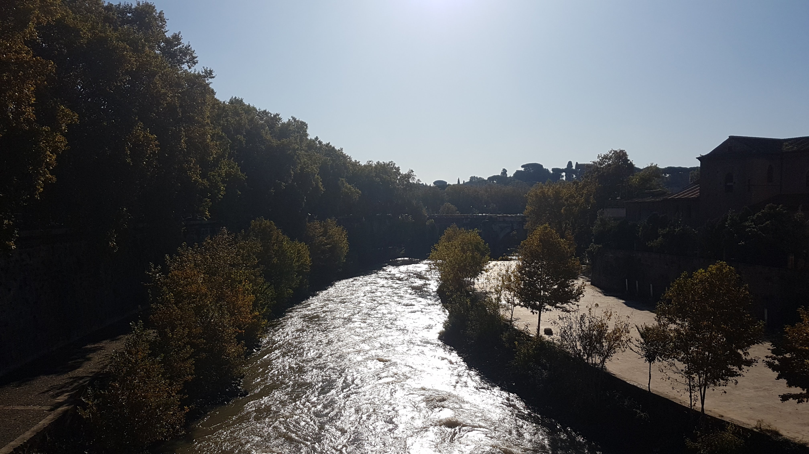

run the city

copenhagen
Copenhagen has excellent cycling routes wich are separated from traffic. You can hire bikes anywhere and it's a great way to see teh city. Stadsgraven canal is just on the outskirts of the city.
rome
It rained all weekend, but didn't stop me running in the mornings, it meant I could eat all the bad stuff for breakfast!

new york
This city was on my bucket-list forever, so I just had to run Central Park.